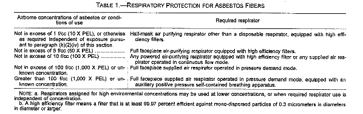

Regulations (Standards - 29 CFR)
Asbestos - 1926.1101
- Standard Number: 1926.1101
- Standard Title: Asbestos
- SubPart Number: Z
- SubPart Title: Toxic and Hazardous Substances
Scope and application. This section regulates asbestos exposure in all work as defined in 29 CFR 1910.12(b), including but not limited to the following:
(a)(1)Demolition or salvage of structures where asbestos is present;
(a)(2)Removal or encapsulation of materials containing asbestos;
(a)(3)Construction, alteration, repair, maintenance, or renovation of structures, substrates, or portions thereof, that contain asbestos;
(a)(4)Installation of products containing asbestos;
(a)(5)Asbestos spill/emergency cleanup; and
(a)(6)Transportation, disposal, storage, containment of and housekeeping activities involving asbestos or products containing asbestos, on the site or location at which construction activities are performed.
(a)(7)Coverage under this standard shall be based on the nature of the work operation involving asbestos exposure.
(a)(8)This section does not apply to asbestos-containing asphalt roof coatings, cements and mastics.
(b)Definitions.
"Aggressive method" means removal or disturbance of building material by sanding, abrading, grinding or other method that breaks, crumbles, or disintegrates intact ACM.
"Amended water" means water to which surfactant (wetting agent) has been added to increase the ability of the liquid to penetrate ACM.
"Asbestos" includes chrysotile, amosite, crocidolite, tremolite asbestos, anthophyllite asbestos, actinolite asbestos, and any of these minerals that has been chemically treated and/or altered. For purposes of this standard, "asbestos" includes PACM, as defined below.
"Asbestos-containing material (ACM)", means any material containing more than one percent asbestos.
"Assistant Secretary" means the Assistant Secretary of Labor for Occupational Safety and Health, U.S. Department of Labor, or designee.
"Authorized person" means any person authorized by the employer and required by work duties to be present in regulated areas.
"Building/facility owner" is the legal entity, including a lessee, which exercises control over management and record keeping functions relating to a building and/or facility in which activities covered by this standard take place.
"Certified Industrial Hygienist (CIH)" means one certified in the practice of industrial hygiene by the American Board of Industrial Hygiene.
"Class I asbestos work" means activities involving the removal of TSI and surfacing ACM and PACM.
"Class II asbestos work" means activities involving the removal of ACM which is not thermal system insulation or surfacing material. This includes, but is not limited to, the removal of asbestos-containing wallboard, floor tile and sheeting, roofing and siding shingles, and construction mastics.
"Class III asbestos work" means repair and maintenance operations, where "ACM", including TSI and surfacing ACM and PACM, is likely to be disturbed.
"Class IV asbestos work" means maintenance and custodial activities during which employees contact but do not disturb ACM or PACM and activities to clean up dust, waste and debris resulting from Class I, II, and III activities.
"Clean room" means an uncontaminated room having facilities for the storage of employees' street clothing and uncontaminated materials and equipment.
"Closely resemble" means that the major workplace conditions which have contributed to the levels of historic asbestos exposure, are no more protective than conditions of the current workplace.
"Competent person" means, in addition to the definition in 29 CFR 1926.32 (f), one who is capable of identifying existing asbestos hazards in the workplace and selecting the appropriate control strategy for asbestos exposure, who has the authority to take prompt corrective measures to eliminate them, as specified in 29 CFR 1926.32(f): in addition, for Class I and Class II work who is specially trained in a training course which meets the criteria of EPA's Model Accreditation Plan (40 CFR 763) for supervisor, or its equivalent and, for Class III and Class IV work, who is trained in a manner consistent with EPA requirements for training of local education agency maintenance and custodial staff as set forth at 40 CFR 763.92 (a)(2).
"Critical barrier" means one or more layers of plastic sealed over all openings into a work area or any other similarly placed physical barrier sufficient to prevent airborne asbestos in a work area from migrating to an adjacent area.
"Decontamination area" means an enclosed area adjacent and connected to the regulated area and consisting of an equipment room, shower area, and clean room, which is used for the decontamination of workers, materials, and equipment that are contaminated with asbestos.
"Demolition" means the wrecking or taking out of any load-supporting structural member and any related razing, removing, or stripping of asbestos products.
"Director" means the Director, National Institute for Occupational Safety and Health, U.S. Department of Health and Human Services, or designee.
"Disturbance" means activities that disrupt the matrix of ACM or PACM, crumble or pulverixe ACM or PACM, or generate visible debris from ACM or PACM. Disturbance includes cutting away small amounts of ACM and PACM, no greater than the amount which can be contained in one standard sized glove bag or waste bag in order to access a building component. In no event shall the amount of ACM or PACM so disturbed exceed that which can be contained in one glove bag or waste bag which shall not exceed 60 inches in length and width.
"Employee exposure" means that exposure to airborne asbestos that would occur if the employee were not using respiratory protective equipment.
"Equipment room (change room)" means a contaminated room located within the decontamination area that is supplied with impermeable bags or containers for the disposal of contaminated protective clothing and equipment.
"Fiber" means a particulate form of asbestos, 5 micrometers or longer, with a length-to-diameter ratio of at least 3 to 1.
"Glovebag" means not more than a 60 x 60 inch impervious plastic bag-like enclosure affixed around an asbestos-containing material, with glove-like appendages through which material and tools may be handled.
"High-efficiency particulate air (HEPA) filter" means a filter capable of trapping and retaining at least 99.97 percent of all mono-dispersed particles of 0.3 micrometers in diameter.
"Homogeneous area" means an area of surfacing material or thermal system insulation that is uniform in color and texture.
"Industrial hygienist" means a professional qualified by education, training, and experience to anticipate, recognize, evaluate and develop controls for occupational health hazards.
"Intact" means that the ACM has not crumbled, been pulverized, or otherwise deteriorated so that the asbestos is no longer likely to be bound with its matrix.
"Modification for purposes of paragraph (g)(6)(ii)," means a changed or altered procedure, material or component of a control system, which replaces a procedure, material or component of a required system. Omitting a procedure or component, or reducing or diminishing the stringency or strength of a material or component of the control system is not a "modification" for purposes of paragraph (g)(6) of this section.
"Negative Initial Exposure Assessment" means a demonstration by the employer, which complies with the criteria in paragraph (f)(2)(iii) of this section, that employee exposure during an operation is expected to be consistently below the PELs.
"PACM" means "presumed asbestos containing material".
"Presumed Asbestos Containing Material" means thermal system insulation and surfacing material found in buildings constructed no later than 1980. The designation of a material as "PACM" may be rebutted pursuant to paragraph (k)(5) of this section.
"Project Designer" means a person who has successfully completed the training requirements for an abatement project designer established by 40 U.S.C. Sec. 763.90(g).
"Regulated area" means: an area established by the employer to demarcate areas where Class I, II, and III asbestos work is conducted, and any adjoining area where debris and waste from such asbestos work accumulate; and a work area within which airborne concentrations of asbestos, exceed or there is a reasonable possibility they may exceed the permissible exposure limit. Requirements for regulated areas are set out in paragraph (e) of this section.
"Removal" means all operations where ACM and/or PACM is taken out or stripped from structures or substrates, and includes demolition operations.
"Renovation" means the modifying of any existing structure, or portion thereof.
"Repair" means overhauling, rebuilding, reconstructing, or reconditioning of structures or substrates, including encapsulation or other repair of ACM or PACM attached to structures or substrates.
"Surfacing material" means material that is sprayed, troweled-on or otherwise applied to surfaces (such as acoustical plaster on ceilings and fireproofing materials on structural members, or other materials on surfaces for acoustical, fireproofing, and other purposes).
"Surfacing ACM" means surfacing material which contains more than 1% asbestos.
"Thermal system insulation (TSI)" means ACM applied to pipes, fittings, boilers, breeching, tanks, ducts or other structural components to prevent heat loss or gain.
"Thermal system insulation ACM" is thermal system insulation which contains more than 1% asbestos.
..1926.1101(c)(c)
Permissible exposure limits (PELS)
(c)(1)Time-weighted average limit (TWA). The employer shall ensure that no employee is exposed to an airborne concentration of asbestos in excess of 0.1 fiber per cubic centimeter of air as an eight (8) hour time-weighted average (TWA), as determined by the method prescribed in Appendix A to this section, or by an equivalent method.
(c)(2)Excursion limit. The employer shall ensure that no employee is exposed to an airborne concentration of asbestos in excess of 1.0 fiber per cubic centimeter of air (1 f/cc) as averaged over a sampling period of thirty (30) minutes, as determined by the method prescribed in Appendix A to this section, or by an equivalent method.
(d)Multi-employer worksites.
(d)(1)On multi-employer worksites, an employer performing work requiring the establishment of a regulated area shall inform other employers on the site of the nature of the employer's work with asbestos and/or PACM, of the existence of and requirements pertaining to regulated areas, and the measures taken to ensure that employees of such other employers are not exposed to asbestos.
(d)(2)Asbestos hazards at a multi-employer work site shall be abated by the contractor who created or controls the source of asbestos contamination. For example, if there is a significant breach of an enclosure containing Class I work, the employer responsible for erecting the enclosure shall repair the breach immediately.
..1926.1101(d)(3)(d)(3)
In addition, all employers of employees exposed to asbestos hazards shall comply with applicable protective provisions to protect their employees. For example, if employees working immediately adjacent to a Class I asbestos job are exposed to asbestos due to the inadequate containment of such job, their employer shall either remove the employees from the area until the enclosure breach is repaired; or perform an initial exposure assessment pursuant to (f) of this section.
(d)(4)All employers of employees working adjacent to regulated areas established by another employer on a multi-employer work-site, shall take steps on a daily basis to ascertain the integrity of the enclosure and/or the effectiveness of the control method relied on by the primary asbestos contractor to assure that asbestos fibers do not migrate to such adjacent areas.
(d)(5)All general contractors on a construction project which includes work covered by this standard shall be deemed to exercise general supervisory authority over the work covered by this standard, even though the general contractor is not qualified to serve as the asbestos "competent person" as defined by paragraph (b) of this section. As supervisor of the entire project, the general contractor shall ascertain whether the asbestos contractor is in compliance with this standard, and shall require such contractor to come into compliance with this standard when necessary.
..1926.1101(e)(e)
Regulated areas.
(e)(1)All Class I, II and III asbestos work shall be conducted within regulated areas. All other operations covered by this standard shall be conducted within a regulated area where airborne concentrations of asbestos exceed, or there is a reasonable possibility they may exceed a PEL. Regulated areas shall comply with the requirements of paragraphs (2), (3),(4) and (5) of this section.
(e)(2)Demarcation. The regulated area shall be demarcated in any manner that minimizes the number of persons within the area and protects persons outside the area from exposure to airborne asbestos. Where critical barriers or negative pressure enclosures are used, they may demarcate the regulated area. Signs shall be provided and displayed pursuant to the requirements of paragraph (k)(7) of this section.
(e)(3)Access. Access to regulated areas shall be limited to authorized persons and to persons authorized by the Act or regulations issued pursuant thereto.
(e)(4)Respirators. All persons entering a regulated area where employees are required pursuant to paragraph (h)(1) of this section to wear respirators shall be supplied with a respirator selected in accordance with paragraph (h)(2) of this section.
(e)(5)Prohibited activities. The employer shall ensure that employees do not eat, drink, smoke, chew tobacco or gum, or apply cosmetics in the regulated area.
..1926.1101(e)(6)(e)(6)
Competent Persons. The employer shall ensure that all asbestos work performed within regulated areas is supervised by a competent person, as defined in paragraph (b) of this section. The duties of the competent person are set out in paragraph (o) of this section.
(f)Exposure assessments and monitoring.
(f)(1)General monitoring criteria.
(f)(1)(i)Each employer who has a workplace or work operation where exposure monitoring is required under this section shall perform monitoring to determine accurately the airborne concentrations of asbestos to which employees may be exposed.
(f)(1)(ii)Determinations of employee exposure shall be made from breathing zone air samples that are representative of the 8-hour TWA and 30-minute short-term exposures of each employee.
(f)(1)(iii)Representative 8-hour TWA employee exposure shall be determined on the basis of one or more samples representing full-shift exposure for employees in each work area. Representative 30-minute short-term employee exposures shall be determined on the basis of one or more samples representing 30 minute exposures associated with operations that are most likely to produce exposures above the excursion limit for employees in each work area.
..1926.1101(f)(2)(f)(2)
Initial Exposure Assessment.
(f)(2)(i)Each employer who has a workplace or work operation covered by this standard shall ensure that a "competent person" conducts an exposure assessment immediately before or at the initiation of the operation to ascertain expected exposures during that operation or workplace. The assessment must be completed in time to comply with requirements which are triggered by exposure data or the lack of a "negative exposure assessment," and to provide information necessary to assure that all control systems planned are appropriate for that operation and will work properly.
(f)(2)(ii)Basis of Initial Exposure Assessment: Unless a negative exposure assessment has been made pursuant to paragraph (f)(2)(iii) of this section, the initial exposure assessment shall, if feasible, be based on monitoring conducted pursuant to paragraph (f)(1)(iii) of this section. The assessment shall take into consideration both the monitoring results and all observations, information or calculations which indicate employee exposure to asbestos, including any previous monitoring conducted in the workplace, or of the operations of the employer which indicate the levels of airborne asbestos likely to be encountered on the job. For Class I asbestos work, until the employer conducts exposure monitoring and documents that employees on that job will not be exposed in excess of the PELs, or otherwise makes a negative exposure assessment pursuant to paragraph (f)(2)(iii) of this section, the employer shall presume that employees are exposed in excess of the TWA and excursion limit.
(f)(2)(iii)Negative Exposure Assessment: For any one specific asbestos job which will be performed by employees who have been trained in compliance with the standard, the employer may demonstrate that employee exposures will be below the PELs by data which conform to the following criteria;
..1926.1101(f)(2)(iii)(A)(f)(2)(iii)(A)
Objective data demonstrating that the product or material containing asbestos minerals or the activity involving such product or material cannot release airborne fibers in concentrations exceeding the TWA and excursion limit under those work conditions having the greatest potential for releasing asbestos; or
(f)(2)(iii)(B)Where the employer has monitored prior asbestos jobs for the PEL and the excursion limit within 12 months of the current or projected job, the monitoring and analysis were performed in compliance with the asbestos standard in effect; and the data were obtained during work operations conducted under workplace conditions "closely resembling" the processes, type of material, control methods, work practices, and environmental conditions used and prevailing in the employer's current operations, the operations were conducted by employees whose training and experience are no more extensive than that of employees performing the current job, and these data show that under the conditions prevailing and which will prevail in the current workplace there is a high degree of certainty that employee exposures will not exceed the TWA and excursion limit; or
(f)(2)(iii)(C)The results of initial exposure monitoring of the current job made from breathing zone air samples that are representative of the 8-hour TWA and 30-minute short-term exposures of each employee covering operations which are most likely during the performance of the entire asbestos job to result in exposures over the PELs.
..1926.1101(f)(3)(f)(3)
Periodic monitoring.
(f)(3)(i)Class I and II operations. The employer shall conduct daily monitoring that is representative of the exposure of each employee who is assigned to work within a regulated area who is performing Class I or II work, unless the employer pursuant to (f)(2)(iii) of this section, has made a negative exposure assessment for the entire operation.
(f)(3)(ii)All operations under the standard other than Class I and II operations. The employer shall conduct periodic monitoring of all work where exposures are expected to exceed a PEL, at intervals sufficient to document the validity of the exposure prediction.
(f)(3)(iii)Exception: When all employees required to be monitored daily are equipped with supplied-air respirators operated in the pressure demand mode, or other positive pressure mode respirator, the employer may dispense with the daily monitoring required by this paragraph. However, employees performing Class I work using a control method which is not listed in paragraph (g)(4)(i), (ii), or (iii) of this section or using a modification of a listed control method, shall continue to be monitored daily even if they are equipped with supplied-air respirators.
(f)(4)Termination of monitoring.
(f)(4)(i)If the periodic monitoring required by paragraph (f)(3) of this section reveals that employee exposures, as indicated by statistically reliable measurements, are below the permissible exposure limit and excursion limit the employer may discontinue monitoring for those employees whose exposures are represented by such monitoring.
..1926.1101(f)(4)(ii)(f)(4)(ii)
Additional monitoring. Notwithstanding the provisions of paragraph (f)(2) and (3), and (f)(4) of this section, the employer shall institute the exposure monitoring required under paragraph (f)(3) of this section whenever there has been a change in process, control equipment, personnel or work practices that may result in new or additional exposures above the permissible exposure limit and/or excursion limit or when the employer has any reason to suspect that a change may result in new or additional exposures above the permissible exposure limit and/or excursion limit. Such additional monitoring is required regardless of whether a "negative exposure assessment" was previously produced for a specific job.
(f)(5)Employee notification of monitoring results.
(f)(5)(i)The employer shall notify affected employees of the monitoring results that represent that employee's exposure as soon as possible following receipt of monitoring results.
(f)(5)(ii)The employer shall notify affected employees of the results of monitoring respresenting the employee's exposure in writing either individually or by posting at a centrally located place that is accessible to affected employees.
(f)(6)Observation of monitoring.
(f)(6)(i)The employer shall provide affected employees and their designated representatives an opportunity to observe any monitoring of employee exposure to asbestos conducted in accordance with this section.
(f)(6)(ii)When observation of the monitoring of employee exposure to asbestos requires entry into an area where the use of protective clothing or equipment is required, the observer shall be provided with and be required to use such clothing and equipment and shall comply with all other applicable safety and health procedures.
..1926.1101(g)(g)
Methods of compliance.
(g)(1)Engineering controls and work practices for all operations covered by this section. The employer shall use the following engineering controls and work practices in all operations covered by this section, regardless of the levels of exposure:
(g)(1)(i)Vacuum cleaners equipped with HEPA filters to collect all debris and dust containing ACM and PACM, except as provided in paragraph (g)(8)(ii) of this section in the case of roofing material.
(g)(1)(ii)Wet methods, or wetting agents, to control employee exposures during asbestos handling, mixing, removal, cutting, application, and cleanup, except where employers demonstrate that the use of wet methods is infeasible due to for example, the creation of electrical hazards, equipment malfunction, and, in roofing, except as provide in paragraph (g)(8)(ii) of this section; and
(g)(1)(iii)Prompt clean-up and disposal of wastes and debris contaminated with asbestos in leak-tight containers except in roofing operations, where the procedures specified in paragraph (g)(8)(ii) of this section apply.
(g)(2)In addition to the requirements of paragraph (g)(1) of this section, the employer shall use the following control methods to achieve compliance with the TWA permissible exposure limit and excursion limit prescribed by paragraph (c) of this section;
(g)(2)(i)Local exhaust ventilation equipped with HEPA filter dust collection systems;
..1926.1101(g)(2)(ii)(g)(2)(ii)
Enclosure or isolation of processes producing asbestos dust;
(g)(2)(iii)Ventilation of the regulated area to move contaminated air away from the breathing zone of employees and toward a filtration or collection device equipped with a HEPA filter;
(g)(2)(iv)Use of other work practices and engineering controls that the Assistant Secretary can show to be feasible.
(g)(2)(v)Wherever the feasible engineering and work practice controls described above are not sufficient to reduce employee exposure to or below the permissible exposure limit and/or excursion limit prescribed in paragraph (c) of this section, the employer shall use them to reduce employee exposure to the lowest levels attainable by these controls and shall supplement them by the use of respiratory protection that complies with the requirements of paragraph (h) of this section.
(g)(3)Prohibitions. The following work practices and engineering controls shall not be used for work related to asbestos or for work which disturbs ACM or PACM, regardless of measured levels of asbestos exposure or the results of initial exposure assessments:
(g)(3)(i)High-speed abrasive disc saws that are not equipped with point of cut ventilator or enclosures with HEPA filtered exhaust air.
..1926.1101(g)(3)(ii)(g)(3)(ii)
Compressed air used to remove asbestos, or materials containing asbestos, unless the compressed air is used in conjunction with an enclosed ventilation system designed to capture the dust cloud created by the compressed air.
(g)(3)(iii)Dry sweeping, shoveling or other dry clean-up of dust and debris containing ACM and PACM.
(g)(3)(iv)Employee rotation as a means of reducing employee exposure to asbestos.
(g)(4)Class I Requirements. In addition to the provisions of paragraphs (g)(1) and (2) of this section, the following engineering controls and work practices and procedures shall be used.
(g)(4)(i)All Class I work, including the installation and operation of the control system shall be supervised by a competent person as defined in paragraph (b) of this section;
(g)(4)(ii)For all Class I jobs involving the removal of more than 25 linear or 10 square feet of thermal system insulation or surfacing material; for all other Class I jobs, where the employer cannot produce a negative exposure assessment pursuant to paragraph (f)(2)(iii) of this section, or where employees are working in areas adjacent to the regulated area, while the Class I work is being performed, the employer shall use one of the following methods to ensure that airborne asbestos does not migrate from the regulated area:
..1926.1101(g)(4)(ii)(A)(g)(4)(ii)(A)
Critical barriers shall be placed over all the openings to the regulated area, except where activities are performed outdoors; or
(g)(4)(ii)(B)The employer shall use another barrier or isolation method which prevents the migration of airborne asbestos from the regulated area, as verified by perimeter area surveillance during each work shift at each boundary of the regulated area, showing no visible asbestos dust; and perimeter area monitoring showing that clearance levels contained in 40 CFR Part 763, Subpt. E, of the EPA Asbestos in Schools Rule are met, or that perimeter area levels, measured by Phase Contrast Microscopy (PCM) are no more than background levels representing the same area before the asbestos work began. The results of such monitoring shall be made known to the employer no later than 24 hours from the end of the work shift represented by such monitoring. Exception: For work completed outdoors where employees are not working in areas adjacent to the regulated areas, this paragraph (g)(4)(ii) is satisfied when the specific control methods in paragraph (g)(5) of this section are used.
(g)(4)(iii)For all Class I jobs, HVAC systems shall be isolated in the regulated area by sealing with a double layer of 6 mil plastic or the equivalent;
(g)(4)(iv)For all Class I jobs, impermeable dropcloths shall be placed on surfaces beneath all removal activity;
..1926.1101(g)(4)(v)(g)(4)(v)
For all Class I jobs, all objects within the regulated area shall be covered with impermeable dropcloths or plastic sheeting which is secured by duct tape or an equivalent.
(g)(4)(vi)For all Class I jobs where the employer cannot produce a negative exposure assessment, or where exposure monitoring shows that a PEL is exceeded, the employer shall ventilate the regulated area to move contaminated air away from the breathing zone of employees toward a HEPA filtration or collection device.
(g)(5)Specific control methods for Class I work. In addition, Class I asbestos work shall be performed using one or more of the following control methods pursuant to the limitations stated below:
(g)(5)(i)Negative Pressure Enclosure (NPE) systems: NPE systems may be used where the configuration of the work area does not make the erection of the enclosure infeasible, with the following specifications and work practices.
(g)(5)(i)(A)Specifications:
(g)(5)(i)(A)(1)The negative pressure enclosure (NPE) may be of any configuration,
(g)(5)(i)(A)(2)At least 4 air changes per hour shall be maintained in the NPE,
..1926.1101(g)(5)(i)(A)(3)(g)(5)(i)(A)(3)
A minimum of -0.02 column inches of water pressure differential, relative to outside pressure, shall be maintained within the NPE as evidenced by manometric measurements,
(g)(5)(i)(A)(4)The NPE shall be kept under negative pressure throughout the period of its use, and
(g)(5)(i)(A)(5)Air movement shall be directed away from employees performing asbestos work within the enclosure, and toward a HEPA filtration or a collection device.
(g)(5)(i)(B)Work Practices:
(g)(5)(i)(B)(1)Before beginning work within the enclosure and at the beginning of each shift, the NPE shall be inspected for breaches and smoke-tested for leaks, and any leaks sealed.
(g)(5)(i)(B)(2)Electrical circuits in the enclosure shall be deactivated, unless equipped with ground-fault circuit interrupters.
(g)(5)(ii)Glove bag systems may be used to remove PACM and/or ACM from straight runs of piping and elbows and other connections with the following specifications and work practices:
(g)(5)(ii)(A)Specifications:
..1926.1101(g)(5)(ii)(A)(1)(g)(5)(ii)(A)(1)
Glovebags shall be made of 6 mil thick plastic and shall be seamless at the bottom.
(g)(5)(ii)(A)(2)Glovebags used on elbows and other connections must be designed for that purpose and used without modifications.
(g)(5)(ii)(B)Work Practices:
(g)(5)(ii)(B)(1)Each glovebag shall be installed so that it completely covers the circumference of pipe or other structure where the work is to be done.
(g)(5)(ii)(B)(2)Glovebags shall be smoke-tested for leaks and any leaks sealed prior to use.
(g)(5)(ii)(B)(3)Glovebags may be used only once and may not be moved.
(g)(5)(ii)(B)(4)Glovebags shall not be used on surfaces whose temperature exceeds 150 deg. F.
(g)(5)(ii)(B)(5)Prior to disposal, glovebags shall be collapsed by removing air within them using a HEPA vacuum.
(g)(5)(ii)(B)(6)Before beginning the operation, loose and friable material adjacent to the glovebag/box operation shall be wrapped and sealed in two layers of six mil plastic or otherwise rendered intact,
..1926.1101(g)(5)(ii)(B)(7)(g)(5)(ii)(B)(7)
Where system uses attached waste bag, such bag shall be connected to collection bag using hose or other material which shall withstand pressure of ACM waste and water without losing its integrity:
(g)(5)(ii)(B)(8)Sliding valve or other device shall separate waste bag from hose to ensure no exposure when waste bag is disconnected:
(g)(5)(ii)(B)(9)At least two persons shall perform Class I glovebag removal operations.
(g)(5)(iii)Negative Pressure Glove Bag Systems. Negative pressure glove bag systems may be used to remove ACM or PACM from piping.
(g)(5)(iii)(A)Specifications: In addition to specifications for glove bag systems above, negative pressure glove bag systems shall attach HEPA vacuum systems or other devices to bag to prevent collapse during removal.
(g)(5)(iii)(B)Work Practices:
(g)(5)(iii)(B)(1)The employer shall comply with the work practices for glove bag systems in paragraph (g)(5)(ii)(B)(4) of this section.
(g)(5)(iii)(B)(2)The HEPA vacuum cleaner or other device used to prevent collapse of bag during removal shall run continually during the operation until it is completed at which time the bag shall be collapsed prior to removal of the bag from the pipe.
..1926.1101(g)(5)(iii)(B)(3)(g)(5)(iii)(B)(3)
Where a separate waste bag is used along with a collection bag and discarded after one use, the collection bag may be reused if rinsed clean with amended water before reuse.
(g)(5)(iv)Negative Pressure Glove Box Systems: Negative pressure glove boxes may be used to remove ACM or PACM from pipe runs with the following specifications and work practices.
(g)(5)(iv)(A)Specifications:
(g)(5)(iv)(A)(1)Glove boxes shall be constructed with rigid sides and made from metal or other material which can withstand the weight of the ACM and PACM and water used during removal:
(g)(5)(iv)(A)(2)A negative pressure generator shall be used to create negative pressure in the system:
(g)(5)(iv)(A)(3)An air filtration unit shall be attached to the box:
(g)(5)(iv)(A)(4)The box shall be fitted with gloved apertures:
(g)(5)(iv)(A)(5)An aperture at the base of the box shall serve as a bagging outlet for waste ACM and water:
(g)(5)(iv)(A)(6)A back-up generator shall be present on site:
..1926.1101(g)(5)(iv)(A)(7)(g)(5)(iv)(A)(7)
Waste bags shall consist of 6 mil thick plastic double-bagged before they are filled or plastic thicker than 6 mil.
(g)(5)(iv)(B)Work practices:
(g)(5)(iv)(B)(1)At least two persons shall perform the removal:
(g)(5)(iv)(B)(2)The box shall be smoke-tested for leakes and any leaks sealed prior to each use:
(g)(5)(iv)(B)(3)Loose or damaged ACM adjacent to the box shall be wrapped and sealed in two layers of 6 mil plastic prior to the job, or otherwise made intact prior to the job.
(g)(5)(iv)(B)(4)A HEPA filtration system shall be used to maintain pressure barrier in box.
(g)(5)(v)Water Spray Process System. A water spray process system may be used for removal of ACM and PACM from cold line piping if, employees carrying out such process have completed a 40-hour separate training course in its use, in addition to training required for employees performing Class I work. The system shall meet the following specifications and shall be performed by employees using the following work practices.
(g)(5)(v)(A)Specifications:
..1926.1101(g)(5)(v)(A)(1)(g)(5)(v)(A)(1)
Piping shall be surrounded on 3 sides by rigid framing,
(g)(5)(v)(A)(2)A 360 degree water spray, delivered through nozzles supplied by a high pressure separate water line, shall be formed around the piping.
(g)(5)(v)(A)(3)The spray shall collide to form a fine aerosol which provides a liquid barrier between workers and the ACM and PACM.
(g)(5)(v)(B)Work Practices:
(g)(5)(v)(B)(1)The system shall be run for at least 10 minutes before removal begins.
(g)(5)(v)(B)(2)All removal shall take place within the water barrier.
(g)(5)(v)(B)(3)The system shall be operated by at least three persons, one of whom shall not perform removal, but shall check equipment, and ensure proper operation of the system.
(g)(5)(v)(B)(4)After removal, the ACM and PACM shall be bagged while still inside the water barrier.
..1926.1101(g)(5)(vi)(g)(5)(vi)
A small walk-in enclosure which accommodates no more than two persons (mini-enclosure) may be used if the disturbance or removal can be completely contained by the enclosure with the following specifications and work practices.
(g)(5)(vi)(A)Specifications:
(g)(5)(vi)(A)(1)The fabricated or job-made enclosure shall be constructed of 6 mil plastic or equivalent:
(g)(5)(vi)(A)(2)The enclosure shall be placed under negative pressure by means of a HEPA filtered vacuum or similar ventilation unit:
(g)(5)(vi)(B)Work practices:
(g)(5)(vi)(B)(1)Before use, the mini-enclosure shall be inspected for leaks and smoke-tested to detect breaches, and breaches sealed.
(g)(5)(vi)(B)(2)Before reuse, the interior shall be completely washed with amended water and HEPA-vacuumed.
(g)(5)(vi)(B)(3)During use, air movement shall be directed away from the employee's breathing zone within the mini-enclosure.
..1926.1101(g)(6)(g)(6)
Alternative control methods for Class I work. Class I work may be performed using a control method which is not referenced in paragraph (g)(5) of this section, or which modifies a control method referenced in paragraph (g)(5)of this section, if the following provisions are complied with:
(g)(6)(i)The control method shall enclose, contain or isolate the processes or source of airborne asbestos dust, or otherwise capture or redirect such dust before it enters the breathing zone of employees.
(g)(6)(ii)A certified industrial hygienist or licensed professional engineer who is also qualified as a project designer as defined in paragraph (b) of this section, shall evaluate the work area, the projected work practices and the engineering controls and shall certify in writing that the planned control method is adequate to reduce direct and indirect employee exposure to below the PELs under worst-case conditions of use, and that the planned control method will prevent asbestos contamination outside the regulated area, as measured by clearance sampling which meets the requirements of EPA's Asbestos in Schools rule issued under AHERA, or perimeter monitoring which meets the criteria in paragraph (g)(4)(ii)(B) of this section.
(g)(6)(ii)(A)Where the TSI or surfacing material to be removed is 25 linear or 10 square feet or less , the evaluation required in paragraph (g)(6) of this section may be performed by a "competent person", and may omit consideration of perimeter or clearance monitoring otherwise required.
..1926.1101(g)(6)(ii)(B)(g)(6)(ii)(B)
The evaluation of employee exposure required in paragraph (g)(6) of this section, shall include and be based on sampling and analytical data representing employee exposure during the use of such method under worst-case conditions and by employees whose training and experience are equivalent to employees who are to perform the current job.
(g)(6)(iii)Before work which involves the removal of more than 25 linear or 10 square feet of thermal system insulation or surfacing material is begun using an alternative method which has been the subject of a paragraph (g)(6) of this section required evaluation and certification, the employer shall send a copy of such evaluation and certification to the national office of OSHA, Office of Technical Support, Room N3653, 200 Constitution Avenue, NW, Washington, DC 20210. The submission shall not constitute approval by OSHA.
(g)(7)Work Practices and Engineering Controls for Class II work.
(g)(7)(i)All Class II work shall be supervised by a competent person as defined in paragraph (b) of this section.
(g)(7)(ii)For all indoor Class II jobs, where the employer has not produced a negative exposure assessment pursuant to paragraph (f)(2)(iii) of this section, or where during the job, changed conditions indicate there may be exposure above the PEL or where the employer does not remove the ACM in a substantially intact state, the employer shall use one of the following methods to ensure that airborne asbestos does not migrate from the regulated area;
..1926.1101(g)(7)(ii)(A)(g)(7)(ii)(A)
Critical barriers shall be placed over all openings to the regulated area; or,
(g)(7)(ii)(B)The employer shall use another barrier or isolation method which prevents the migration of airborne asbestos from the regulated area, as verified by perimeter area monitoring or clearance monitoring which meets the criteria set out in paragraph (g)(4)(ii)(B) of this section.
(g)(7)(ii)(C)Impermeable dropcloths shall be placed on surfaces beneath all removal activity;
(g)(7)(iii)[Reserved]
(g)(7)(iv)All Class II asbestos work shall be performed using the work practices and requirements set out above in paragraph (g)(1)(i) through (g)(1)(iii) of this section.
(g)(8)Additional Controls for Class II work. Class II asbestos work shall also be performed by complying with the work practices and controls designated for each type of asbestos work to be performed, set out in this paragraph. Where more than one control method may be used for a type of asbestos work, the employer may choose one or a combination of designated control methods. Class II work also may be performed using a method allowed for Class I work, except that glove bags and glove boxes are allowed if they fully enclose the Class II material to be removed.
..1926.1101(g)(8)(i)(g)(8)(i)
For removing vinyl and asphalt flooring materials which contain ACM or for which in buildings constructed no later than 1980, the employer has not verified the absence of ACM pursuant to paragraph (g)(8)(i)(I) of this section. The employer shall ensure that employees comply with the following work practices and that employees are trained in these practices pursuant to paragraph (k)(9) of this section:
(g)(8)(i)(A)Flooring or its backing shall not be sanded.
(g)(8)(i)(B)Vacuums equipped with HEPA filter, disposable dust bag, and metal floor tool (no brush) shall be used to clean floors.
(g)(8)(i)(C)Resilient sheeting shall be removed by cutting with wetting of the snip point and wetting during delamination. Rip-up of resilient sheet floor material is prohibited.
(g)(8)(i)(D)All scraping of residual adhesive and/or backing shall be performed using wet methods.
(g)(8)(i)(E)Dry sweeping is prohibited.
(g)(8)(i)(F)Mechanical chipping is prohibited unless performed in a negative pressure enclosure which meets the requirements of paragraph (g)(5)(i) of this section.
(g)(8)(i)(G)Tiles shall be removed intact, unless the employer demonstrates that intact removal is not possible.
(g)(8)(i)(H)When tiles are heated and can be removed intact, wetting may be omitted.
..1926.1101(g)(8)(i)(I)(g)(8)(i)(I)
Resilient flooring material including associated mastic and backing shall be assumed to be asbestos-containing unless an industrial hygienist determines that it is asbestos-free using recognized analytical techniques.
(g)(8)(ii)For removing roofing material which contains ACM the employer shall ensure that the following work practices are followed:
(g)(8)(ii)(A)Roofing material shall be removed in an intact state to the extent feasible.
(g)(8)(ii)(B)Wet methods shall be used to remove roofing materials that are not intact, or that will be rendered not intact during removal, unless such wet methods are not feasible or will create safety hazards.
(g)(8)(ii)(C)Cutting machines shall be continuously misted during use, unless a competent person determines that misting substantially decreases worker safety.
..1926.1101(g)(8)(ii)(D)(g)(8)(ii)(D)
When removing built-up roofs with asbestos-containing roofing felts and an aggregate surface using a power roof cutter, all dust resulting from the cutting operation shall be collected by a HEPA dust collector, or shall be HEPA vacuumed by vacuuming along the cut line. When removing built-up roofs with asbestos-containing roofing felts and a smooth surface using a power roof cutter, the dust resulting from the cutting operation shall be collected either by a HEPA dust collector or HEPA vacuuming along the cut line, or by gently sweeping and then carefully and completely wiping up the still-wet dust and debris left along the cut line.
(g)(8)(ii)(E)Asbestos-containing material that has been removed from a roof shall not be dropped or thrown to the ground. Unless the material is carried or passed to the ground by hand, it shall be lowered to the ground via covered, dust-tight chute, crane or hoist:
(g)(8)(ii)(E)(1)Any ACM that is not intact shall be lowered to the ground as soon as is practicable, but in any event no later than the end of the work shift. While the material remains on the roof it shall either be kept wet, placed in an impermeable waste bag, or wrapped in plastic sheeting.
(g)(8)(ii)(E)(2)Intact ACM shall be lowered to the ground as soon as is practicable, but in any event no later than the end of the work shift.
(g)(8)(ii)(F)Upon being lowered, unwrapped material shall be transferred to a closed receptacle in such manner so as to preclude the dispersion of dust.
(g)(8)(ii)(G)Roof level heating and ventilation air intake sources shall be isolated or the ventilation system shall be shut down.
..1926.1101(g)(8)(ii)(H)(g)(8)(ii)(H)
Notwithstanding any other provision of this section, removal or repair of sections of intact roofing less than 25 square feet in area does not require use of wet methods or HEPA vacuuming as long as manual methods which do not render the material non-intact are used to remove the material and no visible dust is created by the removal method used. In determining whether a job involves less than 25 square feet, the employer shall include all removal and repair work performed on the same roof on the same day.
(g)(8)(iii)When removing cementitious asbestos-containing siding and shingles or transite panels containing ACM on building exteriors (other than roofs, where paragraph (g)(8)(ii) of this section applies) the employer shall ensure that the following work practices are followed:
(g)(8)(iii)(A)Cutting, abrading or breaking siding, shingles, or transite panels, shall be prohibited unless the employer can demonstrate that methods less likely to result in asbestos fiber release cannot be used.
(g)(8)(iii)(B)Each panel or shingle shall be sprayed with amended water prior to removal.
(g)(8)(iii)(C)Unwrapped or unbagged panels or shingles shall be immediately lowered to the ground via covered dust-tight chute, crane or hoist, or placed in an impervious waste bag or wrapped in plastic sheeting and lowered to the ground no later than the end of the work shift.
(g)(8)(iii)(D)Nails shall be cut with flat, sharp instruments.
(g)(8)(iv)When removing gaskets containing ACM, the employer shall ensure that the following work practices are followed:
..1926.1101(g)(8)(iv)(A)(g)(8)(iv)(A)
If a gasket is visibly deteriorated and unlikely to be removed intact, removal shall be undertaken within a glovebag as described in paragraph (g)(5)(ii) of this section.
(g)(8)(iv)(B)[Reserved]
(g)(8)(iv)(C)The gasket shall be immediately placed in a disposal container.
(g)(8)(iv)(D)Any scraping to remove residue must be performed wet.
(g)(8)(v)When performing any other Class II removal of asbestos containing material for which specific controls have not been listed in paragraph (g)(8)(iv)(A) through (D) of this section, the employer shall ensure that the following work practices are complied with.
(g)(8)(v)(A)The material shall be thoroughly wetted with amended water prior to and during its removal.
(g)(8)(v)(B)The material shall be removed in an intact state unless the employer demonstrates that intact removal is not possible.
(g)(8)(v)(C)Cutting, abrading or breaking the material shall be prohibited unless the employer can demonstrate that methods less likely to result in asbestos fiber release are not feasible.
..1926.1101(g)(8)(v)(D)(g)(8)(v)(D)
Asbestos-containing material removed, shall be immediately bagged or wrapped, or kept wetted until transferred to a closed receptacle, no later than the end of the work shift.
(g)(8)(vi)Alternative Work Practices and Controls. Instead of the work practices and controls listed in paragraph (g)(8)(i) through (v) of this section, the employer may use different or modified engineering and work practice controls if the following provisions are complied with.
(g)(8)(vi)(A)The employer shall demonstrate by data representing employee exposure during the use of such method under conditions which closely resemble the conditions under which the method is to be used, that employee exposure will not exceed the PELs under any anticipated circumstances.
(g)(8)(vi)(B)A competent person shall evaluate the work area, the projected work practices and the engineering controls, and shall certify in writing, that the different or modified controls are adequate to reduce direct and indirect employee exposure to below the PELs under all expected conditions of use and that the method meets the requirements of this standard. The evaluation shall include and be based on data representing employee exposure during the use of such method under conditions which closely resemble the conditions under which the method is to be used for the current job, and by employees whose training and experience are equivalent to employees who are to perform the current job.
..1926.1101(g)(9)(g)(9)
Work Practices and Engineering Controls for Class III asbestos work. Class III asbestos work shall be conducted using engineering and work practice controls which minimize the exposure to employees performing the asbestos work and to bystander employees.
(g)(9)(i)The work shall be performed using wet methods.
(g)(9)(ii)To the extent feasible, the work shall be performed using local exhaust ventilation.
(g)(9)(iii)Where the disturbance involves drilling, cutting, abrading, sanding, chipping, breaking, or sawing of thermal system insulation or surfacing material, the employer shall use impermeable dropcloths, and shall isolate the operation using mini-enclosures or glove bag systems pursuant to paragraph (g)(5) of this section or another isolation method.
(g)(9)(iv)Where the employer does not produce a "negative exposure assessment" for a job, or where monitoring results show the PEL has been exceeded, the employer shall contain the area using impermeable dropcloths and plastic barriers or their equivalent, or shall isolate the operation using a control system listed in and in compliance with paragraph (g)(5) of this section.
..1926.1101(g)(9)(v)(g)(9)(v)
Employees performing Class III jobs, which involve the disturbance of thermal system insulation or surfacing material, or where the employer does not produce a "negative exposure assessment" or where monitoring results show a PEL has been exceeded, shall wear respirators which are selected, used and fitted pursuant to provisions of paragraph (h) of this section.
(g)(10)Class IV asbestos work. Class IV asbestos jobs shall be conducted by employees trained pursuant to the asbestos awareness training program set out in paragraph (k)(9) of this section. In addition, all Class IV jobs shall be conducted in conformity with the requirements set out in paragraph (g)(1) of this section, mandating wet methods, HEPA vacuums, and prompt clean up of debris containing ACM or PACM.
(g)(10)(i)Employees cleaning up debris and waste in a regulated area where respirators are required shall wear respirators which are selected, used and fitted pursuant to provisions of paragraph (h) of this section.
(g)(10)(ii)Employers of employees who clean up waste and debris in, and employers in control of, areas where friable thermal system insulation or surfacing material is accessible, shall assume that such waste and debris contain asbestos.
..1926.1101(g)(11)(g)(11)
Alternative methods of compliance for installation, removal, repair, and maintenance of certain roofing and pipeline coating materials. Notwithstanding any other provision of this section, an employer who complies with all provisions of this paragraph (g)(11) when installing, removing, repairing, or maintaining intact pipeline asphaltic wrap, or roof flashings which contain asbestos fibers encapsulated or coated by bituminous or resinous compounds shall be deemed to be in compliance with this section. If an employer does not comply with all provisions of this paragraph (g)(11) or if during the course of the job the material does not remain intact, the provisions of paragraph (g)(8) of this section apply instead of this paragraph (g)(11).
(g)(11)(i)Before work begins and as needed during the job, a competent person who is capable of identifying asbestos hazards in the workplace and selecting the appropriate control strategy for asbestos exposure, and who has the authority to take prompt corrective measures to eliminate such hazards, shall conduct an inspection of the worksite and determine that the roofing material is intact and will likely remain intact.
(g)(11)(ii)All employees performing work covered by this paragraph (g)(11) shall be trained in a training program that meets the requirements of paragraph (k)(9)(viii) of this section.
(g)(11)(iii)The material shall not be sanded, abraded, or ground. Manual methods which do not render the material non-intact shall be used.
(g)(11)(iv)Material that has been removed from a roof shall not be dropped or thrown to the ground. Unless the material is carried or passed to the ground by hand, it shall be lowered to the ground via covered, dust-tight chute, crane or hoist. All such material shall be removed from the roof as soon as is practicable, but in any event no later than the end of the work shift.
..1926.1101(g)(11)(v)(g)(11)(v)
Where roofing products which have been labeled as containing asbestos pursuant to paragraph (k)(8) of this section are installed on non-residential roofs during operations covered by this paragraph (g)(11), the employer shall notify the building owner of the presence and location of such materials no later than the end of the job.
(g)(11)(vi)All removal or disturbance of pipeline asphaltic wrap shall be performed using wet methods.
(h)Respiratory protection.
(h)(1)General. For employees who use respirators required by this section, the employer must provide respirators that comply with the requirements of this paragraph. Respirators must be used during:
(h)(1)(i)Class I asbestos work.
(h)(1)(ii)Class II asbestos work when ACM is not removed in a substantially intact state.
(h)(1)(iii)Class II and III asbestos work that is not performed using wet methods, except for removal of ACM from sloped roofs when a negative-exposure assessment has been conducted and ACM is removed in an intact state.
(h)(1)(iv)Class II and III asbestos work for which a negative-exposure assessment has not been conducted.
(h)(v)Class III asbestos work when TSI or surfacing ACM or PACM is being disturbed.
(h)(1)(vi)Class IV asbestos work performed within regulated areas where employees who are performing other work are required to use respirators.
(h)(1)(vii)Work operations covered by this section for which employees are exposed above the TWA or excursion limit.
(h)(1)(viii)Emergencies.
(h)(2)Respirator program.
(h)(2)(i)The employer must implement a respiratory protection program in accordance with 29 CFR 1910.134 (b) through (d) (except (d)(1)(iii)), and (f) through (m).
(h)(2)(ii)No employee shall be assigned to asbestos work that requires respirator use if, based on their most recent medical examination, the examining physician determines that the employee will be unable to function normally while using a respirator, or that the safety or health of the employee or other employees will be impaired by the employee's respirator use. Such employees must be assigned to another job or given the opportunity to transfer to a different position that they can perform. If such a transfer position is available, it must be with the same employer, in the same geographical area, and with the same seniority, status, rate of pay, and other job benefits the employee had just prior to such transfer.
(h)(3)Respirator selection.
(h)(3)(i)The employer must select the appropriate respirator from Table 1 of this section.

(h)(3)(ii)The employer must provide an employee with a tight-fitting, powered air-purifying respirator instead of a negative-pressure respirator from Table 1 when the employee chooses to use this type of respirator and such a respirator will provide adequate protection to the employee.
(h)(3)(iii)The employer must provide a half-mask air-purifying respirator, other than a disposable respirator, that is equipped with high-efficiency filters when the employee performs:
(h)(3)(iii)(A)(A) Class II and III asbestos work and a negative-exposure assessment has not been conducted by the employer.
(h)(3)(iii)(B)(B) Class III asbestos work when TSI or surfacing ACM or PACM is being disturbed.
(h)(3)(iv)In addition to the above selection criteria, when employees are in a regulated area where Class I work is being performed, a negative exposure assessment of the area has not been produced, and the exposure assessment of the area indicates the exposure level will not exceed 1 f/cc as an 8-hour time weighted average, employers must provide the employees with one of the following respirators:
(h)(3)(iv)(A)A tight-fitting powered air-purifying respirator equipped with high efficiency filters;
(h)(3)(iv)(B)A full facepiece supplied-air respirator operated in the pressure-demand mode equipped with HEPA egress cartrides; or
(h)(3)(iv)(C)A full facepiece supplied-air respirator operated in the pressure-demand mode equipped with an auxiliary positive pressure self-contained breathing apparatus. A full facepiece supplied-air respirator operated in the pressure-demand mode equipped with an auxiliary positive pressure self-contained breathing apparatus must be provided under such conditions when the exposure assessment indicates exposure levels above 1 f/cc as an 8-hour time weighted average.
..1926.1101(i)(i)
Protective clothing.
(i)(1)General. The employer shall provide and require the use of protective clothing, such as coveralls or similar whole-body clothing, head coverings, gloves, and foot coverings for any employee exposed to airborne concentrations of asbestos that exceed the TWA and/or excursion limit prescribed in paragraph (c) of this section, or for which a required negative exposure assessment is not produced, or for any employee performing Class I operations which involve the removal of over 25 linear or 10 square feet of TSI or surfacing ACM and PACM.
(i)(2)Laundering.
(i)(2)(i)The employer shall ensure that laundering of contaminated clothing is done so as to prevent the release of airborne asbestos in excess of the TWA or excursion limit prescribed in paragraph (c) of this section.
(i)(2)(ii)Any employer who gives contaminated clothing to another person for laundering shall inform such person of the requirement in paragraph (i)(2)(i) of this section to effectively prevent the release of airborne asbestos in excess of the TWA and excursion limit prescribed in paragraph (c) of this section.
(i)(3)Contaminated clothing. Contaminated clothing shall be transported in sealed impermeable bags, or other closed, impermeable containers, and be labeled in accordance with paragraph (k) of this section.
(i)(4)Inspection of protective clothing.
(i)(4)(i)The competent person shall examine worksuits worn by employees at least once per workshift for rips or tears that may occur during performance of work.
..1926.1101(i)(4)(ii)(i)(4)(ii)
When rips or tears are detected while an employee is working, rips and tears shall be immediately mended, or the worksuit shall be immediately replaced.
(j)Hygiene facilities and practices for employees.
(j)(1)Requirements for employees performing Class I asbestos jobs involving over 25 linear or 10 square feet of TSI or surfacing ACM and PACM.
(j)(1)(i)Decontamination areas: the employer shall establish a decontamination area that is adjacent and connected to the regulated area for the decontamination of such employees. The decontamination area shall consist of an equipment room, shower area, and clean room in series. The employer shall ensure that employees enter and exit the regulated area through the decontamination area.
(j)(1)(i)(A)Equipment room. The equipment room shall be supplied with impermeable, labeled bags and containers for the containment and disposal of contaminated protective equipment.
(j)(1)(i)(B)Shower area. Shower facilities shall be provided which comply with 29 CFR 1910.141(d)(3), unless the employer can demonstrate that they are not feasible. The showers shall be adjacent both to the equipment room and the clean room, unless the employer can demonstrate that this location is not feasible. Where the employer can demonstrate that it is not feasible to locate the shower between the equipment room and the clean room, or where the work is performed outdoors, the employers shall ensure that employees:
..1926.1101(j)(1)(i)(B)(1)(j)(1)(i)(B)(1)
Remove asbestos contamination from their worksuits in the equipment room using a HEPA vacuum before proceeding to a shower that is not adjacent to the work area; or
(j)(1)(i)(B)(2)Remove their contaminated worksuits in the equipment room, then don clean worksuits, and proceed to a shower that is not adjacent to the work area.
(j)(1)(i)(C)Clean change room. The clean room shall be equipped with a locker or appropriate storage container for each employee's use. When the employer can demonstrate that it is not feasible to provide a clean change area adjacent to the work area or where the work is performed outdoors, the employer may permit employees engaged in Class I asbestos jobs to clean their protective clothing with a portable HEPA-equipped vacuum before such employees leave the regulated area. Following showering, such employees however must then change into street clothing in clean change areas provided by the employer which otherwise meet the requirements of this section.
(j)(1)(ii)Decontamination area entry procedures. The employer shall ensure that employees:
(j)(1)(ii)(A)Enter the decontamination area through the clean room;
(j)(1)(ii)(B)Remove and deposit street clothing within a locker provided for their use; and
..1926.1101(j)(1)(ii)(C)(j)(1)(ii)(C)
Put on protective clothing and respiratory protection before leaving the clean room.
(j)(1)(ii)(D)Before entering the regulated area, the employer shall ensure that employees pass through the equipment room.
(j)(1)(iii)Decontamination area exit procedures. The employer shall ensure that:
(j)(1)(iii)(A)Before leaving the regulated area, employees shall remove all gross contamination and debris from their protective clothing.
(j)(1)(iii)(B)Employees shall remove their protective clothing in the equipment room and deposit the clothing in labeled impermeable bags or containers.
(j)(1)(iii)(C)Employees shall not remove their respirators in the equipment room.
(j)(1)(iii)(D)Employees shall shower prior to entering the clean room.
(j)(1)(iii)(E)After showering, employees shall enter the clean room before changing into street clothes.
(j)(1)(iv)Lunch Areas. Whenever food or beverages are consumed at the worksite where employees are performing Class I asbestos work, the employer shall provide lunch areas in which the airborne concentrations of asbestos are below the permissible exposure limit and/or excursion limit.
..1926.1101(j)(2)(j)(2)
Requirements for Class I work involving less than 25 linear or 10 square feet of TSI or surfacing ACM and PACM, and for Class II and Class III asbestos work operations where exposures exceed a PEL or where there is no negative exposure assessment produced before the operation.
(j)(2)(i)The employer shall establish an equipment room or area that is adjacent to the regulated area for the decontamination of employees and their equipment which is contaminated with asbestos which shall consist of an area covered by a impermeable drop cloth on the floor or horizontal working surface.
(j)(2)(ii)The area must be of sufficient size as to accommodate cleaning of equipment and removing personal protective equipment without spreading contamination beyond the area (as determined by visible accumulations).
(j)(2)(iii)Work clothing must be cleaned with a HEPA vacuum before it is removed.
(j)(2)(iv)All equipment and surfaces of containers filled with ACM must be cleaned prior to removing them from the equipment room or area.
(j)(2)(v)The employer shall ensure that employees enter and exit the regulated area through the equipment room or area.
..1926.1101(j)(3)(j)(3)
Requirements for Class IV work. Employers shall ensure that employees performing Class IV work within a regulated area comply with the hygiene practice required of employees performing work which has a higher classification within that regulated area. Otherwise employers of employees cleaning up debris and material which is TSI or surfacing ACM or identified as PACM shall provide decontamination facilities for such employees which are required by paragraph (j)(2) of this section.
(j)(4)Smoking in work areas. The employer shall ensure that employees do not smoke in work areas where they are occupationally exposed to asbestos because of activities in that work area.
(k)Communication of hazards.
..1926.1101(k)(1)(k)(1)
This section applies to the communication of information concerning asbestos hazards in construction activities to facilitate compliance with this standard. Most asbestos-related construction activities involve previously installed building materials. Building owners often are the only and/or best sources of information concerning them. Therefore, they, along with employers of potentially exposed employees, are assigned specific information conveying and retention duties under this section. Installed Asbestos Containing Building Material. Employers and building owners shall identify TSI and sprayed or troweled on surfacing materials in buildings as asbestos-containing, unless they determine in compliance with paragraph (k)(5) of this section that the material is not asbestos-containing. Asphalt and vinyl flooring material installed no later than 1980 must also be considered as asbestos containing unless the employer, pursuant to paragraph (g)(8)(i)(I) of this section determines that it is not asbestos-containing. If the employer/building owner has actual knowledge, or should have known through the exercise of due diligence, that other materials are asbestos-containing, they too must be treated as such. When communicating information to employees pursuant to this standard, owners and employers shall identify "PACM" as ACM. Additional requirements relating to communication of asbestos work on multi-employer worksites are set out in paragraph (d) of this section.
(k)(2)Duties of building and facility owners.
(k)(2)(i)Before work subject to this standard is begun, building and facility owners shall determine the presence, location, and quantity of ACM and/or PACM at the work site pursuant to paragraph (k)(1) of this section.
(k)(2)(ii)Building and/or facility owners shall notify the following persons of the presence, location and quantity of ACM or PACM, at the work sites in their buildings and facilities. Notification either shall be in writing, or shall consist of a personal communication between the owner and the person to whom notification must be given or their authorized representatives:
(k)(2)(ii)(A)Prospective employers applying or bidding for work whose employees reasonably can be expected to work in or adjacent to areas containing such material;
(k)(2)(ii)(B)Employees of the owner who will work in or adjacent to areas containing such material:
(k)(2)(ii)(C)On multi-employer worksites, all employers of employees who will be performing work within or adjacent to areas containing such materials;
..1926.1101(k)(2)(ii)(D)(k)(2)(ii)(D)
Tenants who will occupy areas containing such material.
(k)(3)Duties of employers whose employees perform work subject to this standard in or adjacent to areas containing ACM and PACM. Building/facility owners whose employees perform such work shall comply with these provisions to the extent applicable.
(k)(3)(i)Before work in areas containing ACM and PACM is begun; employers shall identify the presence, location, and quantity of ACM, and/or PACM therein pursuant to paragraph (k)(1) of this section.
(k)(3)(ii)Before work under this standard is performed employers of employees who will perform such work shall inform the following persons of the location and quantity of ACM and/or PACM present in the area and the precautions to be taken to insure that airborne asbestos is confined to the area.
(k)(3)(ii)(A)Owners of the building/facility;
(k)(3)(ii)(B)Employees who will perform such work and employers of employees who work and/or will be working in adjacent areas.
..1926.1101(k)(3)(iii)(k)(3)(iii)
Within 10 days of the completion of such work, the employer whose employees have performed work subject to this standard, shall inform the building/facility owner and employers of employees who will be working in the area of the current location and quantity of PACM and/or ACM remaining in the area and final monitoring results, if any.
(k)(4)In addition to the above requirements, all employers who discover ACM and/or PACM on a worksite shall convey information concerning the presence, location and quantity of such newly discovered ACM and/or PACM to the owner and to other employers of employees working at the work site, within 24 hours of the discovery.
(k)(5)Criteria to rebut the designation of installed material as PACM.
(k)(5)(i)At any time, an employer and/or building owner may demonstrate, for purposes of this standard, that PACM does not contain asbestos. Building owners and/or employers are not required to communicate information about the presence of building material for which such a demonstration pursuant to the requirements of paragraph (k)(5)(ii) of this section has been made. However, in all such cases, the information, data and analysis supporting the determination that PACM does not contain asbestos, shall be retained pursuant to paragraph (n) of this section.
(k)(5)(ii)An employer or owner may demonstrate that PACM does not contain more than 1 percent asbestos by the following:
(k)(5)(ii)(A)Having a completed inspection conducted pursuant to the requirements of AHERA (40 CFR Part 763, Subpart E) which demonstrates that the material is not ACM; or
..1926.1101(k)(5)(ii)(B)(k)(5)(ii)(B)
Performing tests of the material containing PACM which demonstrate that no ACM is present in the material. Such tests shall include analysis of bulk samples collected in the manner described in 40 CFR 763.86. The tests, evaluation and sample collection shall be conducted by an accredited inspector or by a CIH. Analysis of samples shall be performed by persons or laboratories with proficiency demonstrated by current successful participation in a nationally recognized testing program such as the National Voluntary Laboratory Accreditation Program (NVLAP) or the National Institute for Standards and Technology (NIST) or the Round Robin for bulk samples administered by the American Industrial Hygiene Association (AIHA) or an equivalent nationally-recognized round robin testing program.
(k)(5)(iii)The employer and/or building owner may demonstrate that flooring material including associated mastic and backing does not contain asbestos, by a determination of an industrial hygienist based upon recognized analytical techniques showing that the material is not ACM.
(k)(6)At the entrance to mechanical rooms/areas in which employees reasonably can be expected to enter and which contain ACM and/or PACM, the building owner shall post signs which identify the material which is present, its location, and appropriate work practices which, if followed, will ensure that ACM and/or PACM will not be disturbed. The employer shall ensure, to the extent feasible, that employees who come in contact with these signs can comprehend them. Means to ensure employee comprehension may include the use of foreign languages, pictographs, graphics, and awareness training.
(k)(7)Signs.
(k)(7)(i)Warning signs that demarcate the regulated area shall be provided and displayed at each location where a regulated area is required to be established by paragraph (e) of this section. Signs shall be posted at such a distance from such a location that an employee may read the signs and take necessary protective steps before entering the area marked by the signs.
..1926.1101(k)(7)(ii)(k)(7)(ii) (k)(7)(ii)(A)
The warning signs required by paragraph (k)(7) of this section shall bear the following information.
ASBESTOS
CANCER AND LUNG DISEASE HAZARD
AUTHORIZED PERSONNEL ONLY
In addition, where the use of respirators and protective clothing is required in the regulated area under this section, the warning signs shall include the following:
The employer shall ensure that employees working in and contiguous to regulated areas comprehend the warning signs required to be posted by paragraph (k)(7)(i) of this section. Means to ensure employee comprehension may include the use of foreign languages, pictographs and graphics.
(k)(8)Labels.
(k)(8)(i)Labels shall be affixed to all products containing asbestos and to all containers containing such products, including waste containers. Where feasible, installed asbestos products shall contain a visible label.
(k)(8)(ii)Labels shall be printed in large, bold letters on a contrasting background.
(k)(8)(iii)Labels shall be used in accordance with the requirements of 29 CFR 1910.1200(f) of OSHA's Hazard Communication standard, and shall contain the following information:
CONTAINS ASBESTOS FIBERS
AVOID CREATING DUST
CANCER AND LUNG DISEASE HAZARD
(k)(8)(iv)
[Reserved]
(k)(8)(v)Labels shall contain a warning statement against breathing asbestos fibers.
(k)(8)(vi)The provisions for labels required by paragraphs (k)(8)(i) through (k)(8)(iii) of this section do not apply where:
(k)(8)(vi)(A)Asbestos fibers have been modified by a bonding agent, coating, binder, or other material, provided that the manufacturer can demonstrate that, during any reasonably foreseeable use, handling, storage, disposal, processing, or transportation, no airborne concentrations of asbestos fibers in excess of the permissible exposure limit and/or excursion limit will be released, or
(k)(8)(vi)(B)Asbestos is present in a product in concentrations less than 1.0 percent.
..1926.1101(k)(8)(vii)(k)(8)(vii)
When a building owner or employer identifies previously installed PACM and/or ACM, labels or signs shall be affixed or posted so that employees will be notified of what materials contain PACM and/or ACM. The employer shall attach such labels in areas where they will clearly be noticed by employees who are likely to be exposed, such as at the entrance to mechanical room/areas. Signs required by paragraph (k)(6) of this section may be posted in lieu of labels so long as they contain information required for labelling. The employer shall ensure, to the extent feasible, that employees who come in contact with these signs or labels can comprehend them. Means to ensure employee comprehension may include the use of foreign languages, pictographs, graphics, and awareness training.
(k)(9)Employee Information and Training.
(k)(9)(i)The employer shall, at no cost to the employee, institute a training program for all employees who are likely to be exposed in excess of a PEL and for all employees who perform Class I through IV asbestos operations, and shall ensure their participation in the program.
(k)(9)(ii)Training shall be provided prior to or at the time of initial assignment and at least annually thereafter.
(k)(9)(iii)Training for Class I operations and for Class II operations that require the use of critical barriers (or equivalent isolation methods) and/or negative pressure enclosures under this section shall be the equivalent in curriculum, training method and length to the EPA Model Accreditation Plan (MAP) asbestos abatement workers training (40 CFR Part 763, subpart E, appendix C).
(k)(9)(iv)Training for other Class II work.
..1926.1101(k)(9)(iv)(A)(k)(9)(iv)(A)
For work with asbestos containing roofing materials, flooring materials, siding materials, ceiling tiles, or transite panels, training shall include at a minimum all the elements included in paragraph (k)(9)(viii) of this section and in addition, the specific work practices and engineering controls set forth in paragraph (g) of this section which specifically relate to that category. Such course shall include "hands-on" training and shall take at least 8 hours.
(k)(9)(iv)(B)An employee who works with more than one of the categories of material specified in paragraph (k)(9)(iv)(A) of this section shall receive training in the work practices applicable to each category of material that the employee removes and each removal method that the employee uses.
(k)(9)(iv)(C)For Class II operations not involving the categories of material specified in paragraph (k)(9)(iv)(A) of this section, training shall be provided which shall include at a minimum all the elements included in paragraph (k)(9)(viii) of this section and in addition, the specific work practices and engineering controls set forth in paragraph (g) of this section which specifically relate to the category of material being removed, and shall include "hands-on" training in the work practices applicable to each category of material that the employee removes and each removal method that the employee uses.
..1926.1101(k)(9)(v)(k)(9)(v)
Training for Class III employees shall be consistent with EPA requirements for training of local education agency maintenance and custodial staff as set forth at 40 CFR 763.92(a)(2). Such a course shall also include "hands-on" training and shall take at least 16 hours. Exception: For Class III operations for which the competent person determines that the EPA curriculum does not adequately cover the training needed to perform that activity, training shall include as a minimum all the elements included in paragraph (k)(9)(viii) of this section and in addition, the specific work practices and engineering controls set forth in paragraph (g) of this section which specifically relate to that activity, and shall include "hands-on" training in the work practices applicable to each category of material that the employee disturbs.
(k)(9)(vi)Training for employees performing Class IV operations shall be consistent with EPA requirements for training of local education agency maintenance and custodial staff as set forth at 40 CFR 763.92(a)(1). Such a course shall include available information concerning the locations of thermal system insulation and surfacing ACM/PACM, and asbestos-containing flooring material, or flooring material where the absence of asbestos has not yet been certified; and instruction in recognition of damage, deterioration, and delamination of asbestos containing building materials. Such course shall take at least 2 hours.
(k)(9)(vii)Training for employees who are likely to be exposed in excess of the PEL and who are not otherwise required to be trained under paragraph (k)(9)(iii) through (vi) of this section, shall meet the requirements of paragraph (k)(9)(viii) of this section.
(k)(9)(viii)The training program shall be conducted in a manner that the employee is able to understand. In addition to the content required by provisions in paragraphs (k)(9)(iii) through (vi) of this section, the employer shall ensure that each such employee is informed of the following:
..1926.1101(k)(9)(viii)(A)(k)(9)(viii)(A)
Methods of recognizing asbestos, including the requirement in paragraph (k)(1) of this section to presume that certain building materials contain asbestos;
(k)(9)(viii)(B)The health effects associated with asbestos exposure;
(k)(9)(viii)(C)The relationship between smoking and asbestos in producing lung cancer;
(k)(9)(viii)(D)The nature of operations that could result in exposure to asbestos, the importance of necessary protective controls to minimize exposure including, as applicable, engineering controls, work practices, respirators, housekeeping procedures, hygiene facilities, protective clothing, decontamination procedures, emergency procedures, and waste disposal procedures, and any necessary instruction in the use of these controls and procedures; where Class III and IV work will be or is performed, the contents of EPA 20T-2003, "Managing Asbestos In-Place" July 1990 or its equivalent in content;
(k)(9)(viii)(E)The purpose, proper use, fitting instructions, and limitations of respirators as required by 29 CFR 1910.134;
(k)(9)(viii)(F)The appropriate work practices for performing the asbestos job;
(k)(9)(viii)(G)Medical surveillance program requirements;
(k)(9)(viii)(H)The content of this standard including appendices;
..1926.1101(k)(9)(viii)(I)(k)(9)(viii)(I)
The names, addresses and phone numbers of public health organizations which provide information, materials and/or conduct programs concerning smoking cessation. The employer may distribute the list of such organizations contained in Appendix J to this section, to comply with this requirement; and
(k)(9)(viii)(J)The requirements for posting signs and affixing labels and the meaning of the required legends for such signs and labels.
(k)(10)Access to training materials.
(k)(10)(i)The employer shall make readily available to affected employees without cost, written materials relating to the employee training program, including a copy of this regulation.
(k)(10)(ii)The employer shall provide to the Assistant Secretary and the Director, upon request, all information and training materials relating to the employee information and training program.
(k)(10)(iii)The employer shall inform all employees concerning the availability of self-help smoking cessation program material. Upon employee request, the employer shall distribute such material, consisting of NIH Publication No, 89-1647, or equivalent self-help material, which is approved or published by a public health organization listed in Appendix J to this section.
..1926.1101(l)(l)
Housekeeping.
(l)(1)Vacuuming. Where vacuuming methods are selected, HEPA filtered vacuuming equipment must be used. The equipment shall be used and emptied in a manner that minimizes the reentry of asbestos into the workplace.
(l)(2)Waste disposal. Asbestos waste, scrap, debris, bags, containers, equipment, and contaminated clothing consigned for disposal shall be collected and disposed of in sealed, labeled, impermeable bags or other closed, labeled, impermeable containers except in roofing operations where the procedures specified in paragraph (g)(8)(ii) of this section apply.
(l)(3)Care of asbestos-containing flooring material.
(l)(3)(i)All vinyl and asphalt flooring material shall be maintained in accordance with this paragraph unless the building/facility owner demonstrates, pursuant to paragraph (g)(8)(i)(I) of this section that the flooring does not contain asbestos.
(l)(3)(ii)Sanding of flooring material is prohibited.
(l)(3)(iii)Stripping of finishes shall be conducted using low abrasion pads at speeds lower than 300 rpm and wet methods.
(l)(3)(iv)Burnishing or dry buffing may be performed only on flooring which has sufficient finish so that the pad cannot contact the flooring material.
..1926.1101(l)(4)(l)(4)
Waste and debris and accompanying dust in an area containing accessible thermal system insulation or surfacing ACM/PACM or visibly deteriorated ACM:
(l)(4)(i)shall not be dusted or swept dry, or vacuumed without using a HEPA filter;
(l)(4)(ii)shall be promptly cleaned up and disposed of in leak tight containers.
(m)Medical surveillance..
(m)(1)General..
(m)(1)(i)Employees covered.
(m)(1)(i)(A)The employer shall institute a medical surveillance program for all employees who for a combined total of 30 or more days per year are engaged in Class I, II and III work or are exposed at or above a permissible exposure limit. For purposes of this paragraph, any day in which a worker engages in Class II or Class III operations or a combination thereof on intact material for one hour or less (taking into account the entire time spent on the removal operation, including cleanup) and, while doing so, adheres fully to the work practices specified in this standard, shall not be counted.
..1926.1101(m)(1)(i)(B)(m)(1)(i)(B)
For employees otherwise required by this standard to wear a negative pressure respirator, employers shall ensure employees are physically able to perform the work and use the equipment. This determination shall be made under the supervision of a physician.
(m)(1)(ii)Examination.
(m)(1)(ii)(A)The employer shall ensure that all medical examinations and procedures are performed by or under the supervision of a licensed physician, and are provided at no cost to the employee and at a reasonable time and place.
(m)(1)(ii)(B)Persons other than such licensed physicians who administer the pulmonary function testing required by this section shall complete a training course in spirometry sponsored by an appropriate academic or professional institution.
(m)(2)Medical examinations and consultations..
(m)(2)(i)Frequency. The employer shall make available medical examinations and consultations to each employee covered under paragraph (m)(1)(i) of this section on the following schedules:
(m)(2)(i)(A)Prior to assignment of the employee to an area where negative-pressure respirators are worn;
..1926.1101(m)(2)(i)(B)(m)(2)(i)(B)
When the employee is assigned to an area where exposure to asbestos may be at or above the permissible exposure limit for 30 or more days per year, or engage in Class I, II, or III work for a combined total of 30 or more days per year, a medical examination must be given within 10 working days following the thirtieth day of exposure;
(m)(2)(i)(C)And at least annually thereafter.
(m)(2)(i)(D)If the examining physician determines that any of the examinations should be provided more frequently than specified, the employer shall provide such examinations to affected employees at the frequencies specified by the physician.
(m)(2)(i)(E)Exception: No medical examination is required of any employee if adequate records show that the employee has been examined in accordance with this paragraph within the past 1-year period.
(m)(2)(ii)Content. Medical examinations made available pursuant to paragraphs (m)(2)(i)(A) through (m)(2)(i)(C) of this section shall include:
(m)(2)(ii)(A)A medical and work history with special emphasis directed to the pulmonary, cardiovascular, and gastrointestinal systems.
(m)(2)(ii)(B)On initial examination, the standardized questionnaire contained in Part 1 of Appendix D to this section, and, on annual examination, the abbreviated standardized questionnaire contained in Part 2 of Appendix D to this section.
..1926.1101(m)(2)(ii)(C)(m)(2)(ii)(C)
A physical examination directed to the pulmonary and gastrointestinal systems, including a chest roentgenogram to be administered at the discretion of the physician, and pulmonary function tests of forced vital capacity (FVC) and forced expiratory volume at one second (FEV(1)). Interpretation and classification of chest shall be conducted in accordance with Appendix E to this section.
(m)(2)(ii)(D)Any other examinations or tests deemed necessary by the examining physician.
(m)(3)Information provided to the physician. The employer shall provide the following information to the examining physician:
(m)(3)(i)A copy of this standard and Appendices D, E, and I to this section;
(m)(3)(ii)A description of the affected employee's duties as they relate to the employee's exposure;
(m)(3)(iii)The employee's representative exposure level or anticipated exposure level;
(m)(3)(iv)A description of any personal protective and respiratory equipment used or to be used; and
(m)(3)(v)Information from previous medical examinations of the affected employee that is not otherwise available to the examining physician.
..1926.1101(m)(4)(m)(4)
Physician's written opinion.
(m)(4)(i)The employer shall obtain a written opinion from the examining physician. This written opinion shall contain the results of the medical examination and shall include:
(m)(4)(i)(A)The physician's opinion as to whether the employee has any detected medical conditions that would place the employee at an increased risk of material health impairment from exposure to asbestos;
(m)(4)(i)(B)Any recommended limitations on the employee or on the use of personal protective equipment such as respirators; and
(m)(4)(i)(C)A statement that the employee has been informed by the physician of the results of the medical examination and of any medical conditions that may result from asbestos exposure.
(m)(4)(i)(D)A statement that the employee has been informed by the physician of the increased risk of lung cancer attributable to the combined effect of smoking and asbestos exposure.
(m)(4)(ii)The employer shall instruct the physician not to reveal in the written opinion given to the employer specific findings or diagnoses unrelated to occupational exposure to asbestos.
(m)(4)(iii)The employer shall provide a copy of the physician's written opinion to the affected employee within 30 days from its receipt.
..1926.1101(n)(n)
Recordkeeping..
(n)(1)Objective data relied on pursuant to paragraph (f) to this section.
(n)(1)(i)Where the employer has relied on objective data that demonstrates that products made from or containing asbestos or the activity involving such products or material are not capable of releasing fibers of asbestos in concentrations at or above the permissible exposure limit and/or excursion limit under the expected conditions of processing, use, or handling to satisfy the requirements of paragraph (f), the employer shall establish and maintain an accurate record of objective data reasonably relied upon in support of the exemption.
(n)(1)(ii)The record shall include at least the following information:
(n)(1)(ii)(A)The product qualifying for exemption;
(n)(1)(ii)(B)The source of the objective data;
(n)(1)(ii)(C)The testing protocol, results of testing, and/or analysis of the material for the release of asbestos;
(n)(1)(ii)(D)A description of the operation exempted and how the data support the exemption; and
(n)(1)(ii)(E)Other data relevant to the operations, materials, processing, or employee exposures covered by the exemption.
(n)(1)(iii)The employer shall maintain this record for the duration of the employer's reliance upon such objective data.
..1926.1101(n)(2)(n)(2)
Exposure measurements.
(n)(2)(i)The employer shall keep an accurate record of all measurements taken to monitor employee exposure to asbestos as prescribed in paragraph (f) of this section. NOTE: The employer may utilize the services of competent organizations such as industry trade associations and employee associations to maintain the records required by this section.
(n)(2)(ii)This record shall include at least the following information:
(n)(2)(ii)(A)The date of measurement;
(n)(2)(ii)(B)The operation involving exposure to asbestos that is being monitored;
(n)(2)(ii)(C)Sampling and analytical methods used and evidence of their accuracy;
(n)(2)(ii)(D)Number, duration, and results of samples taken;
(n)(2)(ii)(E)Type of protective devices worn, if any; and
(n)(2)(ii)(F)Name, social security number, and exposure of the employees whose exposures are represented.
(n)(2)(iii)The employer shall maintain this record for at least thirty (30) years, in accordance with 29 CFR 1910.20.
(n)(3)Medical surveillance.
(n)(3)(i)The employer shall establish and maintain an accurate record for each employee subject to medical surveillance by paragraph (m) of this section, in accordance with 29 CFR 1910.20.
..1926.1101(n)(3)(ii)(n)(3)(ii)
The record shall include at least the following information:
(n)(3)(ii)(A)The name and social security number of the employee;
(n)(3)(ii)(B)A copy of the employee's medical examination results, including the medical history, questionnaire responses, results of any tests, and physician's recommendations.
(n)(3)(ii)(C)Physician's written opinions;
(n)(3)(ii)(D)Any employee medical complaints related to exposure to asbestos; and
(n)(3)(ii)(E)A copy of the information provided to the physician as required by paragraph (m) of this section.
(n)(3)(iii)The employer shall ensure that this record is maintained for the duration of employment plus thirty (30) years, in accordance with 29 CFR 1910.20.
(n)(4)Training records. The employer shall maintain all employee training records for one (1) year beyond the last date of employment by that employer.
..1926.1101(n)(5)(n)(5)
Data to Rebut PACM. Where the building owner and employer have relied on data to demonstrate that PACM is not asbestos-containing, such data shall be maintained for as long as they are relied upon to rebut the presumption.
(n)(6)Records of Required Notifications. Where the building owner has communicated and received information concerning the identification, location and quantity of ACM and PACM, written records of such notifications and their content shall be maintained by the building owner for the duration of ownership and shall be transferred to successive owners of such buildings/facilities.
(n)(7)Availability.
(n)(7)(i)The employer, upon written request, shall make all records required to be maintained by this section available to the Assistant Secretary and the Director for examination and copying.
(n)(7)(ii)The employer, upon request, shall make any exposure records required by paragraphs (f) and (n) of this section available for examination and copying to affected employees, former employees, designated representatives, and the Assistant Secretary, in accordance with 29 CFR 1910.20(a) through (e) and (g) through (i).
..1926.1101(n)(7)(iii)(n)(7)(iii)
The employer, upon request, shall make employee medical records required by paragraphs (m) and (n) of this section available for examination and copying to the subject employee, anyone having the specific written consent of the subject employee, and the Assistant Secretary, in accordance with 29 CFR 1910.20.
(n)(8)Transfer of records.
(n)(8)(i)The employer shall comply with the requirements concerning transfer of records set forth in 29 CFR 1910.20(h).
(n)(8)(ii)Whenever the employer ceases to do business and there is no successor employer to receive and retain the records for the prescribed period, the employer shall notify the Director at least 90 days prior to disposal and, upon request, transmit them to the Director.
(o)Competent person..
(o)(1)General. On all construction worksites covered by this standard, the employer shall designate a competent person, having the qualifications and authorities for ensuring worker safety and health required by Subpart C, General Safety and Health Provisions for Construction (29 CFR 1926.20 through 1926.32).
(o)(2)Required Inspections by the Competent Person. Section 1926.20(b)(2) which requires health and safety prevention programs to provide for frequent and regular inspections of the job sites, materials, and equipment to be made by competent persons, is incorporated.
..1926.1101(o)(3)(o)(3)
Additional Inspections. In addition, the competent person shall make frequent and regular inspections of the job sites, in order to perform the duties set out below in paragraph (o)(3)(i) and (ii) of this section. For Class I jobs, on-site inspections shall be made at least once during each work shift, and at any time at employee request. For Class II, III, and IV jobs, on-site inspections shall be made at intervals sufficient to assess whether conditions have changed, and at any reasonable time at employee request.
(o)(3)(i)On all worksites where employees are engaged in Class I or II asbestos work, the competent person designated in accordance with paragraph (e)(6) of this section shall perform or supervise the following duties, as applicable:
(o)(3)(i)(A)Set up the regulated area, enclosure, or other containment;
(o)(3)(i)(B)Ensure (by on-site inspection) the integrity of the enclosure or containment;
(o)(3)(i)(C)Set up procedures to control entry to and exit from the enclosure and/or area;
(o)(3)(i)(D)Supervise all employee exposure monitoring required by this section and ensure that it is conducted as required by paragraph (f) of this section;
(o)(3)(i)(E)Ensure that employees working within the enclosure and/or using glove bags wear respirators and protective clothing as required by paragraphs (h) and (i) of this section;
..1926.1101(o)(3)(i)(F)(o)(3)(i)(F)
Ensure through on-site supervision, that employees set up, use and remove engineering controls, use work practices and personal protective equipment in compliance with all requirements;
(o)(3)(i)(G)Ensure that employees use the hygiene facilities and observe the decontamination procedures specified in paragraph (j) of this section;
(o)(3)(i)(H)Ensure that through on-site inspection, engineering controls are functioning properly and employees are using proper work practices; and,
(o)(3)(i)(I)Ensure that notification requirement in paragraph (k) of this section are met.
(o)(3)(ii)[Reserved]
(o)(4)Training for the competent person.
(o)(4)(i)For Class I and II asbestos work the competent person shall be trained in all aspects of asbestos removal and handling, including: abatement, installation, removal and handling; the contents of this standard; the identification of asbestos; removal procedures, where appropriate; and other practices for reducing the hazard. Such training shall be obtained in a comprehensive course for supervisors that meets the criteria of EPA's Model Accredited Plan (40 CFR part 763, subpart E, Appendix C), such as a course conducted by an EPA-approved or state-approved training provider, certified by EPA or a state, or a course equivalent in stringency, content, and length.
..1926.1101(o)(4)(ii)(o)(4)(ii)
For Class III and IV asbestos work, the competent person shall be trained in aspects of asbestos handling appropriate for the nature of the work, to include procedures for setting up glove bags and mini-enclosures, practices for reducing asbestos exposures, use of wet methods, the contents of this standard, and the identification of asbestos. Such training shall include successful completion of a course that is consistent with EPA requirements for training of local education agency maintenance and custodial staff as set forth at 40 CFR 763.92(a)(2), or its equivalent in stringency, content, and length. Competent persons for Class III and IV work, may also be trained pursuant to the requirements of paragraph (o)(4)(i) of this section.
(p)Appendices.
(p)(1)Appendices A, C, D, and E to this section are incorporated as part of this section and the contents of these appendices are mandatory.
(p)(2)Appendices B, F, H, I, J, and K to this section are informational and are not intended to create any additional obligations not otherwise imposed or to detract from any existing obligations.
(q)Dates.
(q)(1)This standard shall become effective October 11, 1994.
(q)(2)The provisions of 29 CFR 1926.58 remain in effect until the start-up dates of the equivalent provisions of this standard.
(q)(3)Start-up dates. All obligations of this standard commence on the effective date except as follows:
(q)(3)(i)Methods of compliance. The engineering and work practice controls required by paragraph (g) of this section shall be implemented by October 1, 1995.
(q)(3)(ii)Respiratory protection. Respiratory protection required by paragraph (h) of this section shall be provided by October 1, 1995.
..1926.1101(q)(3)(iii)(q)(3)(iii)
Hygiene facilities and practices for employees. Hygiene facilities and practices required by paragraph (j) of this section shall be provided by October 1, 1995.
(q)(3)(iv)Communication of hazards. Identification, notification, labeling and sign posting, and training required by paragraph (k) of this section shall be provided by October 1, 1995.
(q)(3)(v)Housekeeping. Housekeeping practices and controls required by paragraph (1) of this section shall be provided by October 1, 1995.
(q)(3)(vi)Medical surveillance required by paragraph (m) of this section shall be provided by October 1, 1995.
(q)(3)(vii)The designation and training of competent persons required by paragraph (o) of this section shall be completed by October 1, 1995.
[59 FR 40964, Aug. 10, 1994; 60 FR 9624, Feb. 21, 1995; 60 FR 33343, June 28, 1995; 60 FR 33972, June 29, 1995; 60 FR 36043, July 13, 1995; 60 FR 50411, Sept. 29, 1995; 61 FR 5507, Feb. 13, 1996; 61 FR 43454, August 23, 1996; 63 FR 1152, Jan. 8, 1998; 63 FR 20098, April 23, 1998; 63 FR 35138, June 29, 1998]